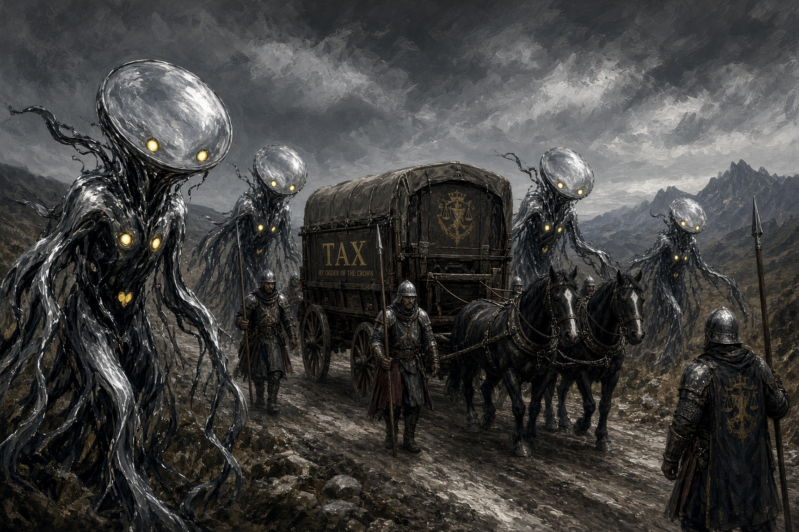
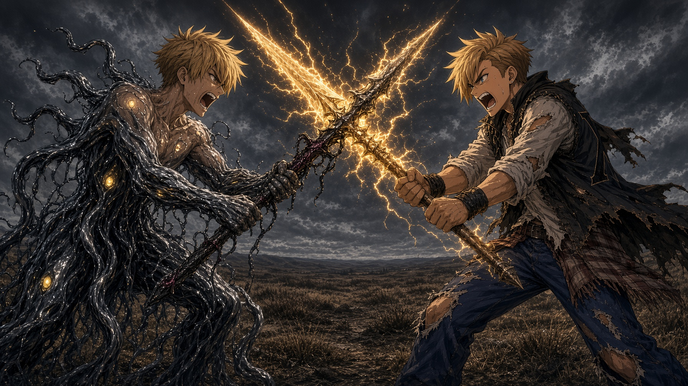
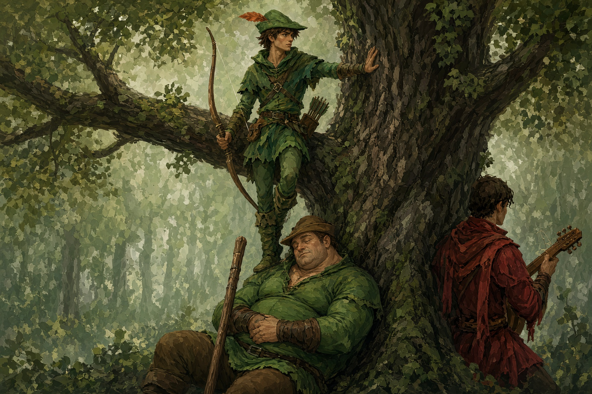

“Jus’ think of where you want to go,” Don said.
The door was set into an old crumbling stone wall containing three gardens, all stolen from different places. It felt like a very quiet and insistent war was being waged by three gardeners with incompatible tastes. Half of it was roses gone to seed, half was raked white gravel with a single stone in the middle, and half was herb beds broken up by cobble paths with a fountain shaped like a fat, winged child spitting water into a basin that was also, as far as Nikko could tell, a bathtub. The door stood in the old stone wall behind all of it, round-topped, its green paint peeling off in curls. It had no handle or keyhole, which seemed dangerously close to disqualifying it as a door, in Nikko’s mind. This might have been the first in a series of lessons on doors for the young man, but no one there was taking notes.
Nikko stood in front of it with Tenmei in both hands and tried to think of where he wanted to go.
“Camelot,” Don said helpfully. “Think Camelot. Big castle, lots of flags, Merlin in a tower lookin’ tired. Merlin’ll know what to do with you, and more to the point he’ll know what to do about that stick a’ yours. Then you’re his headache and not mine.”
“I’ve never been to Camelot.”
“You don’t need to have been. You need to want it.”
Nikko tried to want it. He tried to picture a castle, but what came was a sand castle on the beach at Shin-Seibu with a popsicle stick flag. Then he thought of the beach, then the water coming up over it, black, and he pushed that away so hard he nearly dropped the spear.
“Breathe,” said Lou. He was sitting on the edge of the cherub fountain with his bandaged shoulder hunched, watching. He had not said much since the square. He seemed to only speak when he decided there was no other choice.
Don walked behind Nikko and whispered to Lou. He tried. Don seemed the type who couldn’t help but be heard. Nikko tried to ignore them and focus on wanting. Behind him, he heard Don say, “William’d want it back, you know. Spear and boy both, wrapped up with a bow on.”
“Yes,” said Lou.
“And Merlin’s on the way. Near enough.” Nikko heard Don’s fingers drumming across the wooden sticks on his belt, seeming to count them. “Wizard looks him over, says what’s what, sends word up the line, and we’re back on the job in a week. Clean.”
“You do not wish to know why it chose him,” Lou said.
“I wish to know nothin’ of the kind. Things as don’t make sense, I hand to them as is paid to make sense of ’em.” Don sniffed. “You’re the one what wants to know.”
Lou didn’t answer. He was watching the back of Nikko’s head the way you watch a pot you’ve been told will never boil, and watch it anyway. Nikko could feel it.
He pretended very hard that he didn’t hear any of it. Camelot. Big towers. Merlin. What’s a Merlin? Don said a wizard...
Nikko breathed. He looked at the door and thought, Camelot. He thought, Merlin the Wizard. He thought, I want to go to Camelot, and he tried very hard to mean it. It was like jumping forward off a board. The thoughts flew out behind him, but he stayed right where he was.
The problem was there wasn’t anything behind the words. Wanting things. Nikko never wanted anything, except maybe a slice of pizza sometimes. And helping other people get what they wanted.
And what is it you want, kid? Lou had asked him. Nikko had said he wanted his friends. It had taken him forever to think of that, and he didn’t even know where his friends were. Maybe that was part of the trick. Something I don’t have that I wish I did.
He shut his eyes. Somewhere in the garden a bird he didn’t know was singing, a short bright run of notes over and over, and without noticing he started to hum along with it, up and down like smoothing a sheet. He thought about the kid behind the green door earlier, the one eye watching them through the crack. He thought about the old women sweeping their stoops in Shin-Seibu, and then about all the people everywhere who had a broom and a stoop and a problem they couldn’t sweep away.
Somebody needs help, he thought. Somewhere. I could go there.
The sigil on the back of his right hand warmed, and he felt Tenmei shift in his grip, just slightly, like a magnet finding north.
He opened his eyes and touched the point of the spear to the green door, right where the keyhole should have been.
There was a click, and a thunk.
The door swung inward on green light, birdsong, and a smell so strong that Nikko’s eyes watered: leaves and wet earth, moss and sap and something sweet and growing, the smell of a whole forest breathing out at once.
Don stared through the doorway, his grey eyes flitting across the landscape beyond with his mouth drawn into a wide unhappy line. Then he stared at Nikko.
“That,” he said, “is not Camelot.”
“Sorry.”
“What were you thinkin’ of?”
“I don’t know.” It was true. He looked at his hand, where the sigil was fading back to a dull glow, the spear disappearing with a tiny sound of glass tinkling, like wineglasses in a quiet dinner hall. “I was just thinking about people. I think.”
Lou had stood up from the fountain. He was looking at Nikko in a way Nikko couldn’t read, his one amber eye narrowed a little and his head tilted, like a dog that had heard a sound nobody else could.
“You were humming,” Lou said.
“I was?”
Lou didn’t say anything else. He picked up his pack, ducked his huge head, and went through the door first. Don followed, muttering elvish and counting the wands on his belt with two fingers, and Nikko, after the barest hesitation, went last.
The door was a tree when he came out of it.
Nikko turned around as he exited and it was just an oak tree now, an enormous one, its trunk wider than the apartment hallway back home, its bark ridged and gray and furred with moss. There was no door in it. There was a knothole about where a keyhole would be. A beetle was walking out of it. He thought if he squinted he could just barely see the edge of where the door had been, but then he blinked and even that was gone.
Nikko turned around again, and looked up, and forgot to breathe.
There was a sky.
It was far away and very blue and it had clouds in it, real clouds, white and slow and moving because there was wind up there to move them. Sunlight came down through the leaves in long gold slants full of floating dust, and it landed on his face, and it was warm. It was the first warm thing that had touched him since the roof, and it didn’t want anything from him, and he stood in it with his mouth open and his eyes blinking sunlight like an idiot until Don said, “Sherwood,” in the voice of a man naming a disease.
“Sherwood?” Nikko wiped the wet from his eyes from staring at the bright and glorious sky.
“Fablemire. Sherwood Forest, specifically. Outlaws, deer, a great lot of mud.” Don pulled his slouch cap down over his ears. “Could be worse. Could be a great deal worse. But it ain’t Camelot. A great deal off the path.” He started to pull out a map from his backpack. “If we cut the country right we can make it—”
Somewhere through the trees, not very far, a woman screamed.
Nikko was running before the scream had finished.
He heard Don shout his name behind him, and then “Gurt teasy emmet, ’ee’ll be scat flat as a pilchard dreckly, you see if ’ee bain’t!” in his strange elvish. Nikko was sure it was not a compliment. Then he heard Lou’s heavy feet thudding after him through the bracken. He didn’t slow down. Branches whipped at his face, and Tenmei was suddenly in his hand, and he didn’t remember calling it.
The trees broke open suddenly onto a road and Nikko stumbled out into it, leaves in his hair and clothes. There was an old timey village with white plaster and dark wood and empty holes with shutters for windows. A handful of cottages with crooked thatched roofs and smoke coming out of their chimneys, a well, and a pen with three thin pigs in it. Nikko was only confused for a second when he saw the cart standing in the road, half loaded with sacks of grain, and around the cart, soldiers.
There were maybe a dozen of them, in dented helmets and dirty tabards, with spears and short swords. They had pulled a family out of the nearest cottage, a man on his knees in the mud, a dark welt growing on his cheek and a woman nearby holding a little girl behind her skirts. One of the soldiers was loading their grain onto the cart sack by sack, and another was holding the man down with a boot on his back.
On a tall gray horse in the middle of all of it sat a man in black. On his chest shone a brass star contained inside a circle. It shone like it was polished every day. He had a narrow face and a narrow beard and a narrow little smile, and he was reading from a scroll in a bored, pleasant voice.
“…and for the King’s peace, one sack. For the King’s roads, one sack. For the Sheriff’s trouble in coming all the way out to this wretched little—”
“Hey!” Nikko yelled.
It was not, he realized immediately, a very good opening.
Everyone looked at him: the soldiers, the family, and the man on the horse, who lowered his scroll and raised one thin eyebrow at the boy standing in the middle of the road in strange clothes, holding a brass spear upside down. He raised an eyebrow while his eyes rested on the tip of the spear near Nikko’s ankle.
Nikko flipped the spear around.
“Leave them alone,” he said.
The Sheriff of Nottingham looked at him for a long moment. Then he smiled, and the smile was much worse than the bored voice. He lifted one gloved hand and crooked a finger.
Behind the soldiers, something moved.
Nikko hadn’t even properly seen them. If he had he would have thought they were just shadows under the trees at the edge of the road. They were not. They came out into the sunlight, but the sunlight slid off them. They moved with a sick smoothness and inhuman swerves as though they could not stand to take the same step twice. His stomach churned and he felt the coal in his stomach start to burn.
Exarts, five of them, tall and thin like the ones in Betwixt, smooth and black, but their black wasn’t the oily black of the Ink from the roof. It shone. It was glossy and hard as wet glass, and where the light hit them it came back silver, like a still pond, or a window at night. Each one wore the yellow heart cut into four on its chest and four tiny eye spots, two on its head and two on its stomach, focused on him.
They had no faces, only the little eye spots on the far side of where their faces should have been. In its place there was only that silver sheen, and in it, very small and bent, Nikko could see the road, and the cottages, and himself.
“Now then,” said the Sheriff pleasantly. “May I ask your name? I will need it to officially charge you with disturbing the king’s peace.”
Don arrived a second later with his chest heaving and his long hair full of twigs. He burst out into the road a few feet ahead of Nikko, between the soldiers and the boy.
“Oh,” he said, looking at the soldiers, and the Sheriff, and the five black glass things standing in the road, then finally at Nikko. “Oh, ’ansum. Oh, that’s proper ’ansum. Couldn’t you have stopped to tie your shoe, emmet? Just the once?”
“Those guys were taking their food.”
“A’ course they are! Somebody’s always taking somebody’s food! That’s the story!” Don already had a wand between his fingers. “Right. Right. Stay behind me, and when I tell you to run, you—”
The first Exart came at them.
Don snapped the wand at it. White-hot lightning cracked out of the end the way it had in Betwixt, burning a third of the wand to ash, so loud Nikko felt it in his teeth. The burning energy hit the Exart square in the chest.
The Exart’s chest flashed silver, and the bolt came straight back.
It hit Don in the shoulder and spun him all the way around and threw him into the ditch, and the wand flew out of his fingers, smoking.
Nikko stared. The Exart stood in the road with a wisp of steam curling off its chest, unhurt, and tilted its blank silver head at the ditch like a bird looking at a worm.
“Don!”
“I’m all right!” came the voice from the ditch, its tone contradicting the content. “I’m all right! Don’t you hit ’em, emmet! Don’t hit ’em hard! They’re bloody mirrors! They give it back!”
The soldiers were laughing and jabbing each other in the ribs. The Sheriff was not laughing. The Sheriff was watching very closely.
Then Lou came out of the bushes. He assessed the situation carefully while everyone stared in confusion at him. Then he began to saunter over to the soldiers.
Two of the Exarts went for Nikko, the other three were circling the ditch where Don had fallen.
He swung instinctively. He didn’t even mean to, but the heat from his stomach lurched into his chest and the spear swung around in a wide gold arc as though the rage was in control. The lead mirror Exart caught it.
It caught it with a spear.
It hadn’t had a spear a second ago, but it had one now, black and glossy, with three short cross pieces just below the head, and it was holding it exactly the way Nikko held his, both hands too close together. Its silver face rippled. And then the silver was gone and there was a person’s face there instead, a face Nikko at once knew and couldn’t recognize. Its mouth was open, teeth bared, eyes wide and furious.
His own.
He had never seen himself angry. He’d never been angry before the roof, not really, not like this. The face in the Exart’s head was twisted and red-eyed and ugly. And it was his.

The Exart shoved, and Nikko went backward into the mud. The black spear came down and he rolled. He heard it strike the ground where his head had just been. He felt the gold burning in his own spear and wanted to put everything he had into it, but Don’s words were still stinging in his ears. Don’t hit them hard. They give it back.
He hopped to his feet with practiced ease and swung around to face his foe. Getting up from the ground was one thing Nikko was very, very good at. He didn’t swing the spear this time. He held it out crosswise in front of him, defensively. The Exart attacked, but slower now, with less ferocity. Nikko caught it on the haft and just held it there, breathing slowly. The Exart pushed back just a tiny bit harder, which forced him to push harder. He felt himself needing to increase pressure every second to keep from sliding backwards.
“Lou,” Nikko said through his teeth. “Lou, help.”
Lou was busy.
Six of the soldiers had gone for him all at once. Lou stood in the middle of the squad like a boulder in a stream. He wasn’t fighting them really. Nikko saw a soldier swing a short sword at Lou’s ribs, but Lou just caught the man’s wrist in one hand and turned it, gently. The sword fell with a clatter on the cobbles. Lou picked the man up by his belt and lifted him on top of the cottage roof as easily as someone putting a cat on a shelf. Another soldier jumped on his back. Lou reached over his shoulder, plucked the man off like a burr, and dropped him, headfirst and without much ceremony, into the pig pen. The pigs’ opinion of this was spirited but unclear.
The third soldier got an poleaxe in under Lou’s guard and cut a long line across his chest.
Lou stopped.
His head came down and his shoulders came up. Nikko couldn’t see what happened, but the soldier did. A low animal sound came up out of Lou’s chest that Nikko felt in the soles of his feet.
The soldier with the axe dropped his weapon and fell over himself in a panic. He ran behind the wagon and away as fast as he could. He never looked back.
There was a long moment as the remaining three soldiers stood apart from Lou and shuffled uncomfortably. Nikko heard Lou breathe while he tried to shift his hold on Tenmei. Then Lou picked up the dropped spear, snapped the shaft over his knee, and threw the two halves into the ditch.
“No,” he said quietly. Nikko didn’t think he was talking to the soldiers.
“Lou!” Don had crawled up out of the ditch on the far side, cracking little fire bolts at the ground near the mirror Exarts. His cap gone and his long hair was singed at one side and sticking straight out. “Just put ’em down, will you! Put ’em down and be done!”
“No.”
“They’re only people, Lou! Not important ones anyways! Probably they’ll jes’ wake up in their own beds and feel a bit poorly in the morning—”
“No, Don.”
“Well, that’s lovely for them!” Don snapped a fresh wand off his belt, looked at the nearest Exart, thought better of it, and shot a little burst of ice onto the ground next to it to slow it down. “That’s lovely for them as have beds! Some of us ain’t got a bed to wake up in no more, in case you’d forgot! Some of us go out in this place and we just go out!”
The Exart with Nikko’s face ripped its spear free and swung.
Nikko blocked, and his arms jolted all the way to the shoulder. The other Exart was circling and swung into him from an odd angle. He slid Tenmei awkwardly into the way, barely blocking again. Now it was two of him on one and he knew he couldn’t win. If he pushed harder, if he let the fire in his stomach take control, he’d be facing twice the wrath he could put out. He could see the rage and pain on his own face, and he hated it. It was him. It was him at the top of a drowning city, burning everything he could for love and vengeance. But these things had all of his anger and none of his reasons.
The man in the mud had gotten up. He had his little girl in his arms and his wife by the hand and they were running for the trees. One of the Exarts turned to follow them, suddenly quick.
“No!” Nikko yelled.
The Exarts, slowly overpowering him, yelled “No!” right back at him, in his own voice.
Then an arrow came out of nowhere and went through the thing’s head.
It made a sound like a window breaking.
The Exart stared into Nikko’s eyes, his face frozen on its surface, while the little yellow circle eyes on either side grew wide. A crack ran down its silver face from the arrow, through Nikko’s snarling mouth, down its throat and across its chest, right through the middle of the yellow heart. The crack branched, and branched again, and then the whole thing came apart in a shower of black glass that turned to ink before it touched the ground and to steam before the ink could soak into the mud.
Nikko spun around. There was nothing behind him, and nothing anywhere but trees.
Another arrow came out of the leaves and took the Exart chasing the family right through the back of the head, and that one broke too, glittering, and the family vanished into the green.
A third arrow, and a fourth. Every one came from somewhere different, from high in an oak, from low in a hedge, from a tree that had been empty a moment before. The Exarts spun toward each one, their silver faces bright and blank and searching, and they couldn’t find anyone to turn into. There was no one there to reflect. There was only the forest, and the arrows coming out of it like the forest itself had decided to fight.
The last of the glass Exarts broke apart in the middle of the road.
The soldiers broke too, not into glass but into running. They dropped their spears and ran for the road, and three of them tried to drag the horses pulling the grain cart along with them and gave it up when an arrow hit the wheel between the spokes and locked it.
The Sheriff sat on his gray horse in the middle of the road with arrows quivering in the ground in a neat circle all the way around him, and not one had touched him. He looked at the circle. He looked at the trees. His narrow face had gone white as paper except for two bright red spots high on his cheeks. Nikko noticed, with a strange cold clarity, that he wasn’t looking at the arrows. He was looking at the place in the road where the last Exart had broken. He looked like someone had knocked his ice cream into the ocean.
“Loxley!” he shouted at the forest. “LOXLEY!”
The forest laughed at him.
It was one voice, a man’s, but it came from everywhere and nowhere at once, warm and bright and delighted. The Sheriff’s horse rolled its eyes and danced sideways, and the Sheriff hauled it around, kicked it hard, and galloped off down the road after his soldiers with his black cloak flapping behind him like a dropped flag.
A man dropped out of the oak tree right in front of Nikko.
He landed light, on both feet, the way Wren used to land when he came off the top of the bowl. He was not very tall. He was lean and brown from sun and dressed in green so faded and patched it was mostly the color of leaves. He had a longbow taller than he was slung over one shoulder and a quiver of gray-feathered arrows on his back. His hair was brown where it wasn’t bleached nearly blond and badly needed cutting. His beard was short and still needed trimming. But it was his eyes that Nikko noticed first. They were bright and creased deep at the corners, and they were laughing just by looking.
They were also, Nikko would think much later, counting. The giant. The elf. The boy. The spear.
“Well,” the man said. “That has to be the bravest stupid thing I’ve seen since breakfast. You must be new.”
Nikko opened his mouth, and found he didn’t have anything to put in it.
“Robin,” the man said, and stuck out his hand. “Of Loxley, once upon a time. Of these woods, presently. And you three gentlemen look like you’ve had a very long day.”
The way back to the camp was a long walk into the forest, along paths that weren’t paths until Robin stepped on them. Robin walked beside Nikko, easy, swinging his bow and pointing things out as they went: a badger sett, a stand of mushrooms you could eat and another just like it you couldn’t, a tree that had been struck by lightning and grown around the wound.
“So,” he said, as if it had just occurred to him. “What brings three such fine fellows to my country?”
“Passing through,” said Don, from behind them, before anyone else could answer. “Jus’ passing through. On our way to Camelot, we are. Road went a bit twisty.”
“A bit,” Robin agreed. “Camelot’s a long way north and east of a tree in Sherwood.”
“I’m looking for my friends,” said Nikko.
Behind him, Don made a small strangled noise.
“Friends,” said Robin. “Lost ones?”
“We got separated. In the storm.” Nikko said it fast, the way he’d said it to Lou, and his thumb found his right palm and started rubbing. “Wren and Momo.”
“Odd names,” Robin said. “Not from around here, I’d guess.”
“No. Shin-Seibu. It’s—it was on the coast.”
“And what do they look like, these friends of yours? In case my lads have seen them on the roads.”
Nikko lit up. It hadn’t occurred to him that anyone, anywhere might have seen them. “Wren’s tall. Like, really tall. Well, tall for a normal person. Black hair, all black. He dresses in black and gray and dark purple. He skates—he’s really good, he’s the best, you’d know if you saw him, he moves like—” He made a motion with his hand, a swoop. “And Momo’s small. Smaller than me. She’s got blond hair, gold, kind of orange when the sun hits it, and freckles, and blue eyes, and she wears this big orange jacket all the time, like, over her shoulders, like a cape. Even when it’s hot out. And she hums when she paints. She doesn’t know she does it.”
“Ha.” Robin smiled. “That’s a good description. That’s a description a man could use.”
“Do you think your guys might have seen them?”
“I’ll ask,” said Robin.
Behind them, Don had stopped walking. Nikko turned around. The elf was standing in the middle of the path with his singed hair under his dirty hat and his scorched coat, staring at Nikko with a look of such pure, aching horror that Nikko thought for a second he’d been hit by something.
“What?” said Nikko.
“Nothing,” said Don. “Nothing at all. Names, hair, eyes, habits, the lot. All of it. For free.” He put his hand over his heart like it pained him, and it probably did. “Didn’t even ask for anything back. Not a crust. Not a bootlace.”
“He’s helping us.”
“Is he,” said Don.
Robin laughed, apparently delighted, and kept walking.
Lou said nothing at all, but Nikko saw him look at Robin’s back, once, for a long time.
The camp was in a clearing under the biggest oak Nikko had ever seen, bigger than the one he’d come out of, so big its lowest branches propped themselves on the ground like the elbows of a resting giant. There were tents of patched canvas and lean-tos of woven branches, a fire pit lined with river stones, and over it a whole deer turning on a spit, the fat dripping off it into the flames and hissing. And there were people, more people than Nikko had seen at once since home: men in green and brown, a few women, and kids running between the tents with a dog barking after them.
A huge man with a beard like a hedge stood up from the fire when they came in. He was very nearly as tall as Lou and perhaps a bit wider. The two of them looked at each other for a long moment, like two mountains taking each other’s measure. Then the big man held out a wooden cup of something that foamed, and Lou took it, and that was apparently that.
“Little John,” said Robin. “Don’t let the name fool you. Nothing about him is little except his patience.”
A round man in a brown robe with a shaved patch on the top of his head was stirring a pot, and he waved a ladle at them. “Friar Tuck,” Robin said. “Don’t let the robe fool you either.”
A thin young man in red was sitting on a log with a lute, picking out a tune and singing under his breath. “Will Scarlet,” said Robin. “Let the lute fool you as much as you like. He’ll be grateful.”

And on the far side of the fire, sitting cross-legged on a stump with a pile of white wood shavings around his boots, there was a boy.
He was older than Nikko, but not by much, sixteen maybe. He was long and gangly in the way of somebody who had grown too fast and hadn’t caught up with himself yet, with a mop of dark hair that fell in his eyes and ink stains all over his fingers and a stem of grass in his teeth. He was whittling a stick about the length of a pencil, very fast, not looking at it, and when he finished it he tossed it onto a pile of identical sticks beside him and picked up another blank and started again.
“Emrys,” said Robin. “My apprentice, as he likes to call himself. I’ve never taught him anything in my life. He turned up last spring and hasn’t left.”
“The food’s good,” said Emrys, around the grass stem. He looked at Nikko. He had very dark eyes, and something in them was much older than the rest of his face. Then he winked and he was just another teenager. “And I like it here. I’m having fun.”
They ate. Nikko hadn’t realized he was hungry until the Friar put a wooden bowl into his hands, venison and onions and brown bread soaked in the juices, and then he was so hungry he couldn’t taste anything at all. He ate it in about a minute, and the Friar refilled it without asking.
“The King’s deer,” Robin said cheerfully, sitting down beside them on the log with his own bowl. “It’s death to take one, according to the King. Or rather, according to his brother, who sits in the King’s chair while the King’s away and makes the King’s laws up as he likes.” He tore off a piece of bread. “I take them anyway. Somebody has to feed these people, and the brother certainly isn’t going to.”
Don, who had been picking burned bits out of his hair with a deeply wounded expression, looked up. “You steal from the crown.”
“I take back from the crown,” Robin said, “what the crown took from them first. There’s a difference. A small one. But I find it helps me sleep.” He chewed, and swallowed, and set his bowl down on the log. “Speaking of which. I’ve a bit of work tomorrow. I could use some help.”
“No,” said Don.
“You haven’t heard what it is.”
“Don’t need to.” Don pointed a long finger across the fire, at nothing in particular, at the whole forest. “We ain’t here for fun, and we ain’t here for darin’ deeds. We are passing through on our way to Camelot, where we are going to find Merlin and get this boy some proper training, so he stops holding that spear like he’s trying for a cricket match. That’s the job. That’s the only job. One road, one wizard at the end, me in the middle, and one well earned nap when I get there. No offense.”
“None taken,” said Robin pleasantly.
Nikko looked at Robin, and then at Don. He wanted to say yes. He could practically feel the yes sitting right there in his chest, warm and eager and wanting out. Robin had saved that family, and Robin had saved them, and Robin needed help, and he was asking.
But Don had said no, and Don knew things. Nikko was starting to feel like he didn’t know anything at all. He looked at Lou, for help, for something.
Lou was drinking from his foaming cup and looking at the fire, and he didn’t look back. Whatever this was, he was staying out of it.
“Right,” said Nikko quietly. “We’re going to Camelot.”
Robin nodded like that was perfectly reasonable. He picked his bowl back up and took a bite and chewed thoughtfully.
“Shame,” he said. “It’s an easy job. In and out by noon. I was going to pay in wood.”
Don’s ears twitched.
“Wood,” he said.
“Emrys,” said Robin, without looking around, “what’s the yew you were boasting about yesterday? The bit from the churchyard at Edwinstowe?”
“Eight hundred years old,” said Emrys, without looking up from his whittling. “Lightning-struck twice. Grew back crooked around the scar. Grain like river water.” He flicked a finished wand onto the pile. “Also some blackthorn from a fairy ring, and a holly that’s never once been cut. Makes a nice snap. You’d like it, I think. You seem like a man who likes a nice snap.”
Don had gone very still. Nikko had never seen him go still before, and hadn’t been sure he could.
“Show me,” Don said.
Emrys reached behind him without looking and tossed him one of the finished wands off the pile. Don caught it and turned it over in his long fingers. He held it up to the firelight and squinted down its length like a man sighting down a rifle, and then he tapped it once, very gently, against his knee, and a single blue spark jumped off the end and hung in the air between them and went out.
Don lowered the wand slowly.
“Where,” he said, “did a hedge-whittler learn to grain-match yew like that?”
Emrys shrugged. “Practice.”
“Practice. Practice, he says.” Don looked at the wand, and at the pile of wands, and at the boy, and at the pile again, and Nikko watched something like greed and grief move across his face at the same time. “You know what I’ve been carvin’ out of these last hundred years? Rowan out of hedgerows. Hazel out of other men’s gardens. Kindling. I’ve been settin’ off lightning with kindling.”
“One job,” said Robin. “One easy morning. And Emrys fills your belt.”
Don looked at Lou. Lou drank his foaming whatever-it-was and looked at the fire.
“One job,” Don said at last. “One. In and out by noon. And then we’re going to Camelot, and Merlin can sort the boy, if the old goat’s awake. He sleeps more than he wakes these days, I hear. Probably senile. Probably dribbling into his beard in some tower.”
Across the fire, Emrys grinned to himself and looked strangely young for one so young.
After supper, Lou came and sat on Nikko’s other side.
He didn’t say anything. He just held out one huge hand, palm up, and Nikko, after a confused moment, called Tenmei and laid it across Lou’s palm. Lou didn’t take it. He closed Nikko’s hands around it and then he took Nikko’s wrists in his own hands and moved them, the left one down the shaft and the right one up, farther apart than Nikko had been holding them, a lot farther, so far it felt wrong. He turned Nikko’s right wrist a little, so the knuckles faced up instead of out.
He let go, and looked at Nikko’s hands, and nodded once.
From the other side of the fire, Don watched the whole thing with his arms folded.
“That’s not a cricket grip,” Don said grudgingly, to nobody.
“No,” said Lou.
“Still needs Merlin.”
“Yes,” said Lou.
And he went back to the fire and his cup and didn’t say a single word more about it.
Nikko sat holding the spear the new way. It felt wrong. It also felt, he thought, a little more like the spear was holding itself.
Will Scarlet was singing now, properly. He’d been picking at the lute all through supper, half a tune here and half a tune there, and now he put his boot up on the log and leaned into it, and the camp went quiet in the way a room goes quiet when everyone already knows what’s coming.
It was a slow song, low, almost a whisper.
Oh, the Queen has a glass, and the glass has an eye,
And the eye sees the river, the road and the sky,
But it can’t see the briar where the red rose grows,
So keep your head down, love, and sing it low.
The Merry Men hummed under it, and a few of them mouthed the words without singing them, like a personal prayer. Nikko saw Little John look up once, at the dark between the leaves, as though something might be up there listening.
There was a king in a far valley, the song said, and a great castle and two daughters, one white as snow and one red as a rose. And the king took a new queen, and the new queen took a mirror, and the mirror told her who was fairest. The white girl went to sleep and didn’t wake up, and the red girl ran into the briars and was never seen again.
But she’ll come back.
Will Scarlet stamped his boot on the log, once, hard, and the song went from a whisper to a roar so fast that Nikko nearly fell off his seat, because every single person in the camp was singing it now, men and women and kids, bellowing it up into the oak with their cups in the air:
She’ll come back red! She’ll come back red!
With the crown on her brow and the Queen’s on her bed!
She’ll come back red in the briar and the dew,
And the glass will go dark, and it’s coming for you!
“Not in front of the little ones!” Friar Tuck roared, scandalized, flapping his ladle.
The little ones, who had clearly been waiting all night for exactly this, screamed the next verse twice as loud. Nikko didn’t catch all of it, but he caught enough. It was very specific about what would happen to the Queen’s head, and where the head would go afterward, and a little girl of about six with no front teeth was singing that part with her eyes shut in total, blissful joy.
He started laughing. He couldn’t help it. Everyone was laughing, the whole camp, red-faced and roaring, and the Friar was hiding his face in his robe, and it was the most terrible, happy thing Nikko had ever heard.
Across the fire, Robin was not singing.
He was smiling, and he tapped his foot along with the beat, but he wasn’t singing. When Will drew breath for the next chorus Robin reached over without looking and put a hand flat on the strings of the lute. Will looked at him. Robin raised one eyebrow, very slightly. Will cleared his throat, and his fingers changed, and the lute swung into something quick and bouncy with a chorus about a miller’s goat. The camp groaned, and then laughed, and then sang about the goat instead, which by the sound of it had done some terrible things too.
Nikko didn’t notice. He was laughing too hard. Later he would hum the tune to himself, though he would never notice.
The Merry Men were banging their cups on their knees to keep time, and the kids were dancing around the fire in a ragged ring, and somebody pulled Nikko up into the ring. He didn’t know the steps, and nobody cared. Somebody’s little sister was holding one of his hands and somebody’s little brother was holding the other. It was a crew, it was a whole crew, and he let himself get pulled along in it like a ship in the riptide.
At the end of the song the ring broke up and everybody let go. Without thinking, Nikko’s fingers slid out and went for the snap.
Nobody there to meet it.
Robin found him later, out at the edge of the firelight, where the big oak’s roots came up out of the ground like a giant’s knuckles and made a seat just Nikko’s size.
Robin didn’t say anything at first. He sat down on the next root over with his bow across his knees and a little knife in his hand, and started carving at a stick of white wood, the shavings curling off it and dropping into the dark.
“You were fast,” he said finally. “On the road.”
“Sorry.”
“Don’t be sorry. I’m asking. Why’d you rush in?”
Nikko frowned. It seemed like a strange question. “They needed help.”
“There were twelve soldiers and five of the Queen’s mirrors, and you had a spear you can’t hold.” The knife went on carving, steady and unhurried. “What if there’d been fifty?”
“I’d still have gone.”
“A hundred?”
“They’d still need help.” Nikko noticed that he didn’t feel defensive at all. It was a simple fact. He knew in his bones it was true, even if somewhere distantly he knew it was stupid and weird.
Robin nodded slowly, and turned the stick over in his fingers. He wasn’t looking at Nikko’s face. He was looking at Nikko’s hands the way Lou looked at things, with a terrible and simple certainty. Nikko stopped rubbing his thumb across his palm and stuck his hands in his pockets instead.
“And if it had gone bad,” Robin said. “If the elf had gone down for good, and your big friend, and it was just you in the road. Would you have run?”
“No.”
Now he sounded a little defensive. He felt heat in his stomach and was surprised by it. He said it before he even thought. But it was true. He knew it like he knew down, by gravity.
The knife stopped, just for a second, and then it started again.
“No,” Robin agreed quietly. “I don’t suppose you would.” He shaved off a long white curl. “Your big friend says you lost your home.”
Nikko looked at him. Lou had said that? Lou didn’t say anything.
“He didn’t say it in words,” Robin said, reading his face. “He said it the way big quiet men say things. With his eyebrows, mostly.” The knife went on carving. “Where was it?”
“Shin-Seibu.”
“You said. On the coast.” Robin turned the stick. “What did it smell like?”
The question was so unexpected that Nikko answered it before he could think. “Fish,” he said. “And diesel. And fruit, like old fruit, in the market. Like it was going bad, but the good kind of going bad. Sweet.”
“Mm. Loxley smelled like the mill. Wet stone and flour dust. And my mother’s bread on Saturdays.” Robin’s eyes flicked up to Nikko’s face, and away again. “Where did you eat?”
“There was a pizza place.” Nikko’s throat did something strange. “Wren’s place. He said he’d been going there since he was twelve. Man the food there... Pizza is like... Like flat bread with red sauce and just covered in cheese and sausages. I wish I could get you some—the cheese was so thick it went like—” He made a stretching motion with both hands. “Like ship’s rope.”
“That sounds like a good place.”
“It was the best food in the universe.”
Robin waited. He was good at waiting. He let the quiet sit there long enough that Nikko felt it pressing on his chest, and then he set the stick down across his knee.
“And where did you go,” he asked, “when you wanted to be alone?”
Nikko opened his mouth.
He was going to say the alley, the good alley, with the cats and the three candles that were always lit. Or the tunnel, Momo’s tunnel, with the halfpipe that leaned a little to the left that the two of them had built together, and the mural, the flowers and the coral and the fish swimming in a sky that might have been a sea, or even the boardwalk before the crowds got there or the beach to practice swinging sticks like swords.
He was going to say it, and he tried to say it, and what came out was a sound he didn’t recognize, high and broken and ugly, and then another. Then his face was wet and his chest was heaving and he couldn’t stop it. He couldn’t stop any of it.
He had locked it. He had stood over the hole and watched the pizza sign flicker but stay on, the last light in the whole drowned city, his whole world.
And he had turned the Key.
And he had locked it.
Everything. Everyone. The old women and their brooms, and the noodle man with his hose, and his mom, and Wren’s parents and the crew. The fish in the sky.
He’d locked them all in the dark and walked away and shaken some man’s hand. Because he said he needed help.
Robin didn’t say anything. He didn’t put an arm around him or tell him it was all right. He just sat there on the next root over, close enough that Nikko could feel he was there, and let him cry until he was finished. The fire behind them burned down to coals before he was done. Will Scarlet’s lute went quiet. Somewhere off in the dark an owl asked a question and nobody answered.
Robin watched him the whole time. He watched the way Nikko cried, hunched over like he was hiding it from somebody, quiet even now, pressing the heels of his hands into his eyes the way somebody does who has learned to cry without waking anyone. He watched how long it took, and he watched how Nikko came out of it, all at once, wiping his face on his sleeve and sitting up straight like a kid caught sleeping in class.
“Sorry,” Nikko said.
“For what?”
Nikko didn’t know.
“I rode out with the King once,” Robin said, picking his stick back up. “On one of his crusades. He’s always riding out on one, and they never get any farther than Camelot. Something about the place turns a man around, and you come home in the spring not quite sure where the winter went. And when I came home, there was a stranger in my father’s hall. The brother’s man. He had my name on a paper, and the paper said I was dead and my lands were his. I stood outside my own gate in the rain and a boy I’d known since he was in swaddling told me to move along.” He shaved off a long white curl of wood. “So. I know a bit about it.”
“How did you…” Nikko didn’t know how to finish it.
“Get over it? I didn’t. You don’t, I think. But I got on with it.” Robin looked at him sideways. “Can I tell you the only thing I’ve learned that was worth the price?”
Nikko nodded.
“You give,” Robin said. “I can see that. It’s all over you, it comes off you like heat off a hearth. You ran into that road without a single thought for yourself, and that’s a fine thing, lad. It’s the finest thing there is. But a man with empty hands can’t give anybody anything.” He held up his stick, a little half-finished shape that might have been a bird. “Everything I give these people, I took from somewhere first. And I keep a little back. For me. Not because I’m greedy. Because if I don’t, there’s nothing left to give tomorrow. You understand?”
“Yeah,” said Nikko. “Yeah, that makes sense.”
It did. It made perfect sense. He heard every word of it. He nodded, and he felt it settle into his chest warm and kind, like the sun through the leaves that afternoon. Teenagers secretly wish they could be handed such secrets and he felt honored to be entrusted with this one.
Like most teens given good advice, he did not understand it even a little.
But something did. Somewhere deep in his chest, under his heart, something small and quiet took Robin’s words and folded them up very carefully and put them away, the way a girl puts a pressed flower between the pages of a book she means to keep.
Nikko didn’t feel that. He just felt warm.
“Thanks,” he said, and meant it. “Really. Thanks.”
“Get some sleep,” Robin said. “It’s an early morning. And eat something first. You gave half your second bowl to the miller’s boy, I saw you.”
Nikko went back to the fire. The Friar had saved him a heel of bread and a piece of venison wrapped in a leaf and pressed it into his hands, and Nikko said thank you and sat down with it on the log.
A little girl was sitting by the banked coals with her knees pulled up, the same little girl who’d held his hand in the dance, and she was looking at the bread.
Nikko gave it to her. He didn’t even think about it.
When the boy was asleep, curled in a borrowed blanket between the oak’s roots, Robin of Loxley walked back to the fire and sat down across from the giant.
Lou hadn’t moved. He was still sitting where he had been all evening, his huge hands around his empty cup and his bandaged shoulder hunched, watching the coals. Across the clearing the elf was snoring under a tree with a brand new wand clutched to his chest like a child with a doll. Emrys was gone. Emrys was often gone.
Robin poured himself a cup from the jug by the fire. He didn’t offer Lou one, and he sat with it a while.
“He gave his bread away,” Robin said. “Right after. I told him not to. He nodded like he understood and then he went straight over and gave it away.”
“Yes,” said Lou.
“He’ll break.” Robin said it quietly, without any cruelty in it, the way a man talks about the weather. “He can’t bend. He’ll give and give and hold the line for every stranger in the road until there’s nothing left of him, and one day he’ll just shatter. I’ve seen it. I’ve known men like that. I buried almost all of them.”
“Almost,” Lou said. Robin pretended he hadn’t heard.
“But not tomorrow,” Robin said, and he let out a long sigh. “Not tomorrow. He cried it out. He’ll be steady tomorrow. And whatever happens, he won’t run.”
“No,” said Lou. “He won’t.”
The coals ticked. Somewhere above them, in the black of the great oak, an owl turned its head.
“You’re going to use him,” Lou said.
He didn’t say it like an accusation. He said it the way he’d said Tenmei’s name in the square in Betwixt, quietly, to see if anything would answer.
Robin turned his cup around in his hands and looked at it for a long time.
“I use everybody,” he said finally. “That’s the job. I take what I need from wherever it is, and I try to give back more than I took. Most days I manage it.” He looked up, across the fire, at the boy asleep between the roots, his hair sticking out on one side and his hand curled loosely around nothing. “I’ll try to send him home whole.”
“He has no home,” said Lou.
Robin didn’t answer that.
He finished his cup, and stood, and stretched, and picked up his bow. At the edge of the firelight he stopped and looked back, and for a second all the laughter was gone out of his face, and there was only a tired man who had stood outside his own gate in the rain.
“First light,” he said. “Wake the elf.”
Lou watched him go. Then he got up, slow and careful of the shoulder and chest. He sat down heavily on the root next to the sleeping boy, the same root Robin had sat on, and settled his back against the oak.
He didn’t sleep. He sat there until the stars went pale, with the boy breathing beside him. Every so often he looked down at the hand curled loosely around nothing, and once, very quietly, so quietly only the oak could have heard it, he said a name that wasn’t Nikko’s.